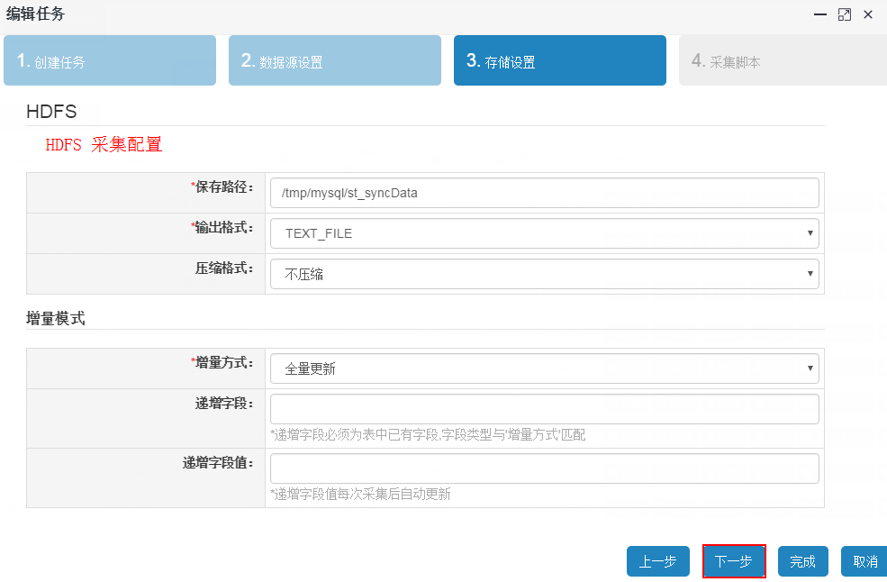
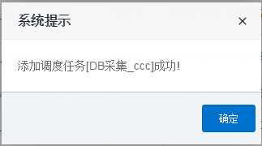

DB数据采集模块主要将远程关系数据库中的数据采集到本数据中心, 本数据中心数据存储媒介包括HDFS, HIVE和HBASE
创建DB采集任务包括4个步骤, 分别为:1.创建任务, 2.数据源配置, 3.存储设置, 4.采集脚本, 各步骤设置如下:

源数据预览主要用于预览采集源关系数据库的数据结构及数据内容, 为系统用户提供直观的查看页面 备注: 这里默认查看20条记录
采集任务创建完成之后, 用户可以通过测试操作, 验证采集任务是否可行以及采集结构是否准确, 发现问题好及时调整
测试过程中会在当前页面加载进度层防止其他误操作, 采集任务运行完毕之后会弹出运行结果, 以查看Yarn任务的执行明细
采集目录用于查看本地采集的文件对象
其中HDFS文件查看内容如下:
页面上只能查看50条记录, 如果需要查看所有的文件内容, 可以通过下载按钮将文件内容下载到本地副本中
任务测试完成并达到预期效果之后, 可以将该采集任务添加至调度任务列表, 每个任务只可被添加一次, 添加成功提示如下:

如重复添加系统则会进行提示:
添加成功后会在 调度管理→任务管理 中看到该任务信息
用户可以通过该功能查看采集任务明细状态, 该日志只保存最近一次的日志信息
用户也可以通过查看Yarn的明细日志, 来了解任务的详细信息
查看任务配置明细